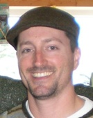

Meet the easyb team
Open source projects like easyb rely on motivated individuals like yourself to pitch in -- whether that be for the long haul or dropping in for a short stint -- every little bit helps! The following partial list of people have contributed to easyb in some way or another.
Andy Glover is an entrepreneur, author, speaker, and the founder of easyb. He is the co-author of a number of books including 2008's Jolt award winning Continuous Integration, Groovy in Action, and Java Testing Patterns. He regularly writes about software development and the software industry at The Disco Blog and he’s fortune enough to have the opportunity to speak to a variety of audiences at various conferences around the globe on such topics as Behavior Driven Development, Cloud Computing, and Agile Software Development. He currently serves as the Managing Partner of Beacon50.
Rod Coffin is a Principal Consultant at Improving Enterprises which provides training, consulting, and outsourcing services. He has over 10 years of professional software development experience across a wide variety of industries, technologies, and roles. He has coached and mentored several teams on agile software development and is equally passionate about the organizational and technical sides of effective software development. He is a frequent speaker at software conferences and has written many articles on a range of software development topics including agility, enterprise software development, and semantics.
Ken Brooks is an avid proponent of doing things consistently and reducing complexity. The loves of his life are his daughter Sheridon and his wife Blonnie who is a professional photographer. Having dabbled in the Ruby world, Ken saw an evolution with rSpec but still felt that the it/should syntax wasn't quite hitting the mark. Andrew Glover (who Ken knew from NFJS conferences) pointed him at Dan North's site which ultimately led to the introduction of the Story syntax (Given/When/Then). HtmlReports, CI builds, the original plugin system and cleaning up the initial Gant build scripts were all part of his contributions while he was active. Ken has been largely inactive with easyb over the past year but continues to be amazed by the work done by the team and the community as a whole. Ken Brooks is currently a Technical Lead at JPMorgan Chase and a bdd/easyb evangelist whenever someone will listen
Jeffrey Erikson has done two things since he was a kid: write stories and wreck (and then fix) computer programs. He did graduate work in English before deciding to jump tracks to his digital life, where he's been writing software professionally since 1999. He recently got turned on to easyb by one of Andy Glover's talks at a No Fluff Just Stuff symposium, and now he gets to write stories *and* work with software at the same time. When he's not coding or spending time with his family, he's playing golf, reading a book, or trying to rope people into playing Settlers of Catan.
Darran White has has been a developer for 10 years. During that time he`s worked in a diverse set of industries such as telecoms,travel,business intelligence,consultancy and finance. He has written software primarily in C++,Java,C# and Groovy/Grails. He is currently working on front office systems dealing with Credit Derivatives. While not cutting code Darran enjoys playing chicken with buses while cycling to work through the mean streets of London.
Chris Cantu has worked in IT since 2000 and has been a software developer since 2005. He has worked in a variety of industries and businesses including banking, education, government and technology. In December 2008, Chris joined Rackspace Hosting as Software Developer and is proud to call himself a "Racker". Believing behavior driven development and easyb address one of the greatest issues in software development, communication, Chris decided to get involved with easyb.Jerome Lacoste likes to write software and easyb is part of his must have tool box.
John Brothers contributed the easiness project and provided some great laughs, advise, and mentoring to Andy when they worked together.
Jerome Pimmel worked on various aspects of easyb and was instrumental in driving home various agile tenets to the team.
David Calavera provided various features to the core of easyb -- thank you!!
Richard Vowles was instrumental in various Grails plugin and core related features and even provided bug fixes.
Robert Hjertmann Christiansen was a great help with the Eclipse plugin.
Gustavo Madruga has been a huge help with the easyb Grails plugin!
Last, but not least, we consider everyone on the easyb user's list a team member -- whether you are asking questions, requesting features, answering questions, or just listening, without your help we couldn't do it. Thanks for your support!
Want to join this illustrious group of individuals? Then pitch in! Join the mailing list and answer questions or fix an outstanding defect or add a new feature!